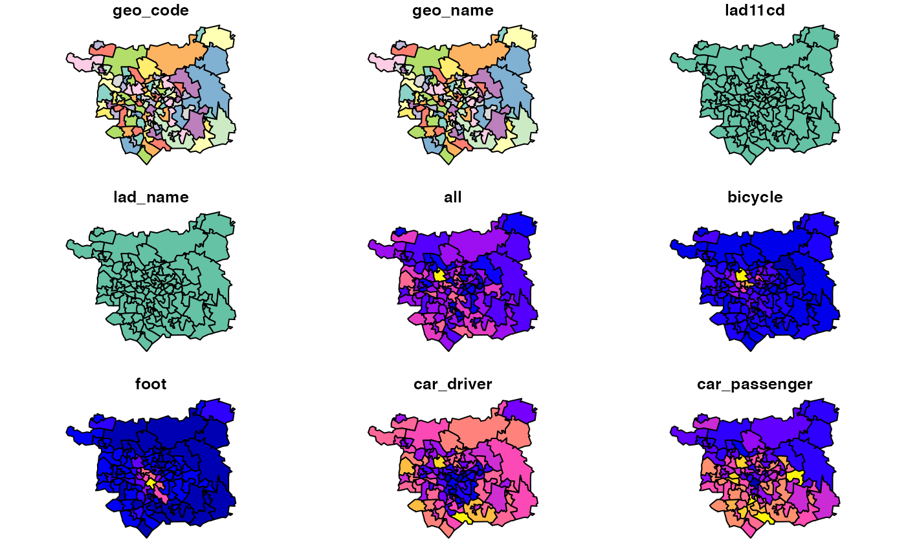

zones_leeds.RdThis dataset contains polygons and Census travel to work data associated with administrative (MSOA) zones in Leeds, UK
zones_leeds
A spatial (sf) data frame with 107 rows and 15 variables (modes same as od_leeds dataset).
geo_codecharacter geo_code of the unique zones
dutch_slcNumber who cycle to work under the PCT's Go Dutch scenario
zones_leeds#> Simple feature collection with 107 features and 14 fields #> geometry type: POLYGON #> dimension: XY #> bbox: xmin: -1.800362 ymin: 53.699 xmax: -1.292229 ymax: 53.94589 #> geographic CRS: WGS 84 #> # A tibble: 107 x 15 #> geo_code geo_name lad11cd lad_name all bicycle foot car_driver #> <chr> <chr> <chr> <chr> <dbl> <dbl> <dbl> <dbl> #> 1 E020023… Leeds 0… E08000… Leeds 2809 52 300 2170 #> 2 E020023… Leeds 0… E08000… Leeds 2387 53 469 1573 #> 3 E020023… Leeds 0… E08000… Leeds 2471 39 341 1666 #> 4 E020023… Leeds 0… E08000… Leeds 3743 80 529 2340 #> 5 E020023… Leeds 0… E08000… Leeds 2995 53 170 2421 #> 6 E020023… Leeds 0… E08000… Leeds 3056 33 106 2549 #> 7 E020023… Leeds 0… E08000… Leeds 2690 35 94 2178 #> 8 E020023… Leeds 0… E08000… Leeds 3187 31 238 2222 #> 9 E020023… Leeds 0… E08000… Leeds 3155 52 343 2024 #> 10 E020023… Leeds 0… E08000… Leeds 2501 41 360 1552 #> # … with 97 more rows, and 7 more variables: car_passenger <dbl>, #> # motorbike <dbl>, train_tube <dbl>, bus <dbl>, taxi_other <dbl>, #> # dutch_slc <dbl>, geometry <POLYGON [°]>#> [1] 107 15#> Warning: plotting the first 9 out of 14 attributes; use max.plot = 14 to plot all